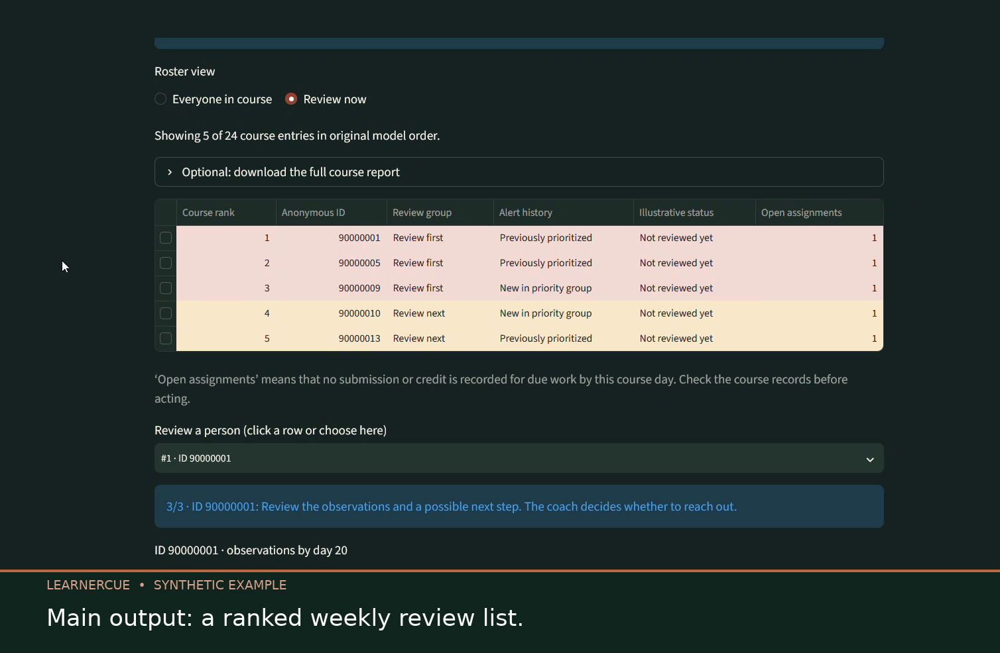
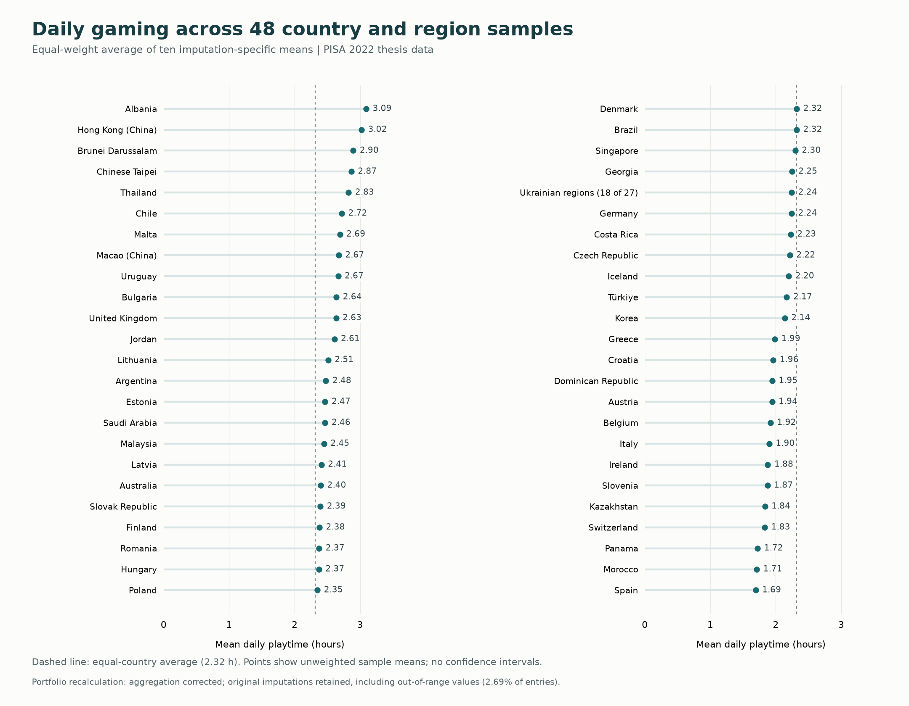

Tony Willert · Potsdam, Germany
Data analysis for
research & education.
I’m Tony, a data analyst with a background in educational sciences. I use R and Python to investigate research questions, build analytical tools and make results understandable.
Background
About me
My background is in educational research, with experience supporting empirical work in higher education. I have extended that foundation through practical projects in data analytics and machine learning.
I enjoy the whole analytical process: turning a question into a workable study, preparing the data, choosing an appropriate method and explaining what the findings support. I make those decisions visible in my project documentation.
Data preparation
Cleaning, joining and checking datasets with R and Python.
Statistical analysis
Regression, multilevel models and the treatment of missing data.
Research & reporting
Research questions, evaluation and understandable findings.
Applied machine learning
Model comparison, evaluation and interactive prototypes.
Selected work
Two ways I work with data.
An applied prototype and a research case study. Choose a project to explore the question, my approach and the results.

Applied machine learning
LearnerCue
An interactive prototype for weekly course reviews, supported by historical learning data and an exploratory model evaluation.

Quantitative research
Gaming & socio-emotional skills
A PISA 2022 research case study combining questionnaire preparation, multiple imputation and multilevel modelling in R.